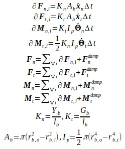
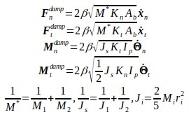
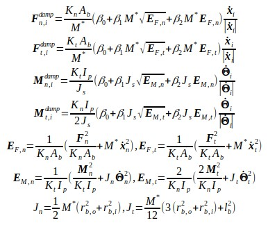
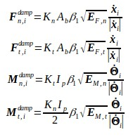
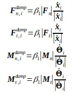

bond_style gran command¶
Syntax¶
bond_style gran
Examples¶
bond_style gran
bond_coeff 1 1.0 0.0 1.5e9 1.0e9 1 1.0 0 0.01
bond_coeff 1 1.0 0.0 1.5e9 1.0e9 1 1.0 1 1.5e6 1.0e6
bond_coeff 1 1.0 0.0 1.5e9 1.0e9 1 1.0 2 1.5e6 1.0e6 330.0
bond_coeff 1 1.0 0.0 1.5e9 1.0e9 2 0.1 1.0 0.5 1 1.5e6 1.0e6
Warning
This is a beta version... Be carefull...
Description¶
The gran bond style uses the following force and moment equations
The granular bond is adopted from D.O.Potyondy P.A.Cundall's original paper, "A Bonded-Particle for Rock". The model currently utilizes two differnt damping styles, one inspired by Yu Guo et al (2013) and slightly modified by Schramm et al (2019) (damp style 1)
and a modified damping type with three versions. The first version is a full method with the following two versions being simplifications of the full method (damp style 2). This model has allowed large damping coefficents without the need of utilizing very small time steps.
damp style 3 simplifies the above equation by assuming that β_0 and β_2 are set to 0.0
while damp style 4 also assumes that the velocity and angular velocity in the bond is near 0.0
Warning
These modified damping styles have not been fully tested for dynamic use and users should be skeptical of all results...
The bond gran model offers three break styles. The simple break style (Break_Style 1) looks at the distance between two spheres and if the distance is greater than 2 r_break, the bond is considered to be broken. The next method (Break_Style 2) checks the maximum stress inside the bond. If the stress is greater than a critical stress, the bond is broken. The user needs to supply the critical normal stress (Pa) and the critical tangential stress (Pa). The maximum stress is calculated as follows.

The third break style (Break_Style 3) expands on the stress dependent method by looking at the average temperature between two spheres and comparing the temperature to a crtical temp value. The user must supply the following fixes.
fix ftco all property/global thermalConductivity peratomtype 5.
fix ftca all property/global thermalCapacity peratomtype 10.
fix heattransfer all heat/gran initial_temperature 300.
The following coefficients must be defined for each bond type via the bond_coeff command as in the example above, or in the data file or restart files read by the read_data or read_restart commands:
- r_bo (distance)
- r_bi (distance)
- Yb (Pa)
- Gt (Pa)
- Damp_Style
- Damp_Coefficients (1 or 3 values, β or β_0 β_1 β_2)
- Break_Style
- Break_Coefficients (1 or 2 or 3 values, r_break or σ_crit τ_crit, or σ_crit τ_crit temp_crit)
Restrictions¶
This bond style can only be used if LIGGGHTS(R)-PUBLIC was built with the MOLECULAR package (which it is by default). See the Making LIGGGHTS(R)-PUBLIC section for more info on packages.